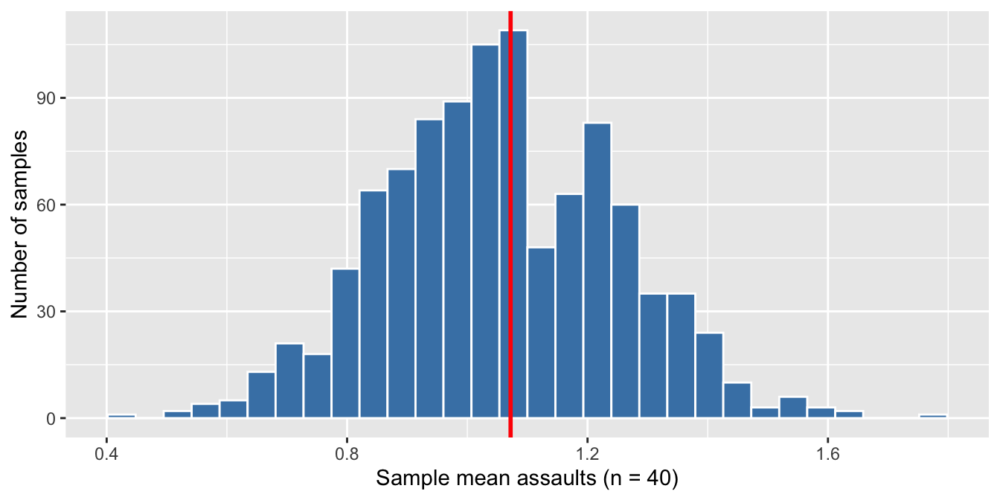
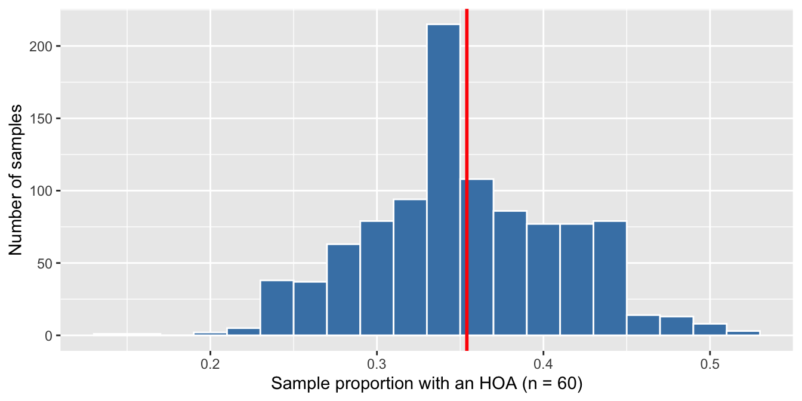

Practice Problems · Session 4
The law of large numbers, sampling distributions, and the CLT
Ungraded self-checks. Work each problem in your own R session before clicking the solution. These use different numbers and variables than the homework on purpose — if you can do these cold, Homework 4 (and the midterm’s sampling questions) will feel routine. Your random numbers will differ from the solutions’ unless you run set.seed(705) immediately before each simulation — close is what you’re checking for, not digit-for-digit matches.
All problems that use data need only:
Problem 1 · The long run arrives slowly
Suppose 12% of intake drug screens at a jail come back positive. Simulate one week (25 screens), one quarter (250), and one decade (25,000) with sample(), and compute the positive proportion for each. How close does each get to 0.12?
Solution
[1] 0.2[1] 0.156[1] 0.12204This run: ≈ 0.20, ≈ 0.16, ≈ 0.122. A week of screens can sit far from the truth; a decade practically is the truth — the law of large numbers. The practical warning runs the other way: any rate computed from 25 cases deserves deep suspicion.
Problem 2 · Build a sampling distribution
Treat the 500 neighborhoods in nbhd as a population, and imagine an analyst who can only audit 40 neighborhoods at a time. Using the tibble() + map_dbl() pattern from the Session 4 slides, draw 1,000 samples of 40 and keep each sample’s mean of assaults. Histogram the 1,000 means and mark the true population mean with a geom_vline(). Where is the distribution centered?
Solution
[1] 1.072mean(sample_means$mean_assaults) # center of the 1,000 sample means[1] 1.056875ggplot(sample_means, aes(mean_assaults)) +
geom_histogram(bins = 30, fill = "steelblue", color = "white") +
geom_vline(xintercept = mean(nbhd$assaults), color = "red", linewidth = 1) +
labs(x = "Sample mean assaults (n = 40)", y = "Number of samples")
The 1,000 means pile up in a bell centered almost exactly on the true mean (≈ 1.06 vs 1.07 this run) — a sampling distribution in action: individual samples wander, but the collection of sample means is centered on the truth.
Problem 3 · The standard error, both ways
Session 4’s rule: the formula must survive a simulation check. Compute the SD of your 1,000 sample means from Problem 2, then the formula version sd(nbhd$assaults) / sqrt(40). How close?
Solution
[1] 0.196668[1] 0.2058036≈ 0.20 simulated vs ≈ 0.21 from the formula — the standard error is just the SD of the sampling distribution, and SD / sqrt(n) predicts it without ever running the simulation. That’s why one sample plus the formula is enough for the inference we start next session.
Problem 4 · Spot the error
A report on the Problem 2 audit states:
“The standard error of about 0.21 tells us how much individual neighborhoods vary around the citywide average.”
Fix the sentence. Then: if the analyst’s budget grew to n = 160 neighborhoods per audit, what would happen to the SE? Verify with the formula.
Solution
se_40 se_160
0.2058036 0.1029018 Wrong quantity: describing how individual neighborhoods vary is the standard deviation’s job (≈ 1.3 here). The standard error describes how much the sample mean would move across repeated audits of 40 — a fix: “If we re-drew the 40-neighborhood audit, the estimated mean would typically shift by about 0.21 assaults.” And quadrupling n to 160 halves the SE (≈ 0.21 → ≈ 0.10) — precision grows with √n, so it gets expensive fast.
Problem 5 · The CLT on a yes/no variable
The variable hoa is about as non-normal as data gets — every neighborhood is simply "Yes" or "No". Compute the true population proportion of HOA neighborhoods, then draw 1,000 samples of 60 and keep each sample’s proportion (mean(sample(nbhd$hoa, size = 60) == "Yes")). Histogram the 1,000 proportions. What shape appears, and which theorem predicted it?
Solution
mean(nbhd$hoa == "Yes") # true population proportion[1] 0.354set.seed(705)
hoa_props <- tibble(draw = 1:1000) |>
mutate(prop_hoa = map_dbl(draw, \(d) mean(sample(nbhd$hoa, size = 60) == "Yes")))
ggplot(hoa_props, aes(prop_hoa)) +
geom_histogram(binwidth = 0.02, fill = "steelblue", color = "white") +
geom_vline(xintercept = mean(nbhd$hoa == "Yes"), color = "red", linewidth = 1) +
labs(x = "Sample proportion with an HOA (n = 60)", y = "Number of samples")
A two-category population, yet the sample proportions form an approximately normal bell centered on the truth (0.354) — the central limit theorem. It’s the same magic as the homework’s arrest proportions, and it’s why we can attach a standard error to any rate without the raw data ever looking normal.
Problem 6 · Why n − 1, re-proven on counts
Session 4 paid the n − 1 IOU with test scores; make it pay again with skewed count data. Draw 2,000 tiny samples of n = 4 from nbhd$assaults and compute each sample’s variance both ways — dividing by n, and with var() (which divides by n − 1). Compare the two averages to the true population variance, mean((x - mean(x))^2). (The slides’ list-column pattern — one map(), then two map_dbl()s — is the move.)
Solution
set.seed(705)
var_sims <- tibble(draw = 1:2000) |>
mutate(
s = map(draw, \(d) sample(nbhd$assaults, size = 4)),
var_div_n = map_dbl(s, \(x) sum((x - mean(x))^2) / length(x)),
var_div_nm1 = map_dbl(s, \(x) var(x))
)
var_sims |>
summarize(
true_variance = mean((nbhd$assaults - mean(nbhd$assaults))^2),
avg_divide_by_n = mean(var_div_n),
avg_divide_by_n_minus_1 = mean(var_div_nm1)
)# A tibble: 1 × 3
true_variance avg_divide_by_n avg_divide_by_n_minus_1
<dbl> <dbl> <dbl>
1 1.69 1.28 1.71Dividing by n lands around 1.28 — about 25% below the true variance (≈ 1.69) — while var() averages ≈ 1.7, right on target. Nothing about this trick required bell-shaped data: a sample clusters around its own mean, understating spread, and n − 1 is exactly the correction that makes the estimator unbiased.